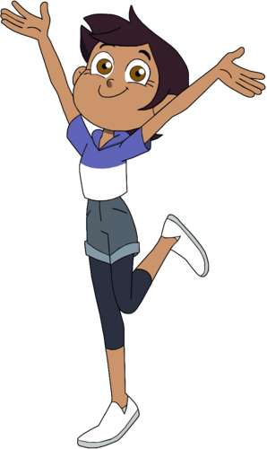
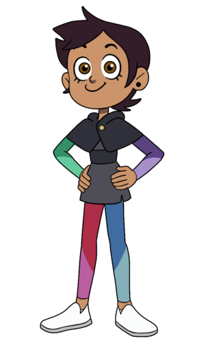

Luz Noceda


Seslendiren:Sarah-Nicole Robles
Tam İsim:Luz Noceda
Diğer isimler:Luz The Human, Human, Mija, Cariño, Luzura, Chosen One, Lady Luz, Boo Boo Buddy, Grom Queen, Cutie, Round Ears
Yaş:14
Cinsiyet:kız
Tür:İnsan
Meslek:Cadı çırağı, Hexside Öğrencisi
Amaç:Cadı olmak ve eve gitmenin yolunu bulmak
Sınıf:Hepsi
Akrabalar:Camilia Noceda
Sevdiği şeyler:Büyü, fantastik kitaplar, "The Good Witch Azura", AMV yapmak, yağmur, yazarlık, geçmiş hakkında hikayeler
Sevmediği şeyler:Yaz kampı, Denetim Sınıfı, süt, arkadaşlarının incinmesi, İmparator Meclisi
Kullanabildiği Silahlar:Baykuş Asası, glif kartları
Yetenekler:Işık, buz, bitki, ateş ve görünmezlik büyüsü
Luz Noceda, Baykuş Evi adlı çizgi dizinin baş karakteridir. Kendisi Latin bir genç kızdır. Yanlışlıkla Kaynar Adalar'a giden bir portala girmiştir. Gittiği boyutta tüm sihirli yaratıklar gerçektir ve kendisi oradaki tek insandır.
Luz, bir cadı olabileceğini kanıtlamak için Eda'nın rehberliğinde hiçbir doğal sihir becerisi olmadan sihir öğrenmeye çalışır.
Luz, Hexside Sihir ve İblis Okulunda ilk insan öğrencidir.
Görünüş
Luz; 14 yaşında, bronz tenli, kahverengi kısa saçlı, ela gözlü bir kızdır. Kıyafetleri bir çift yuvarlak küpe, kapüşonunda kedi kulakları bulunan yarı beyaz yarı mavi bir hoodie, yüksek belli bir kot şort ve beyaz ayakkabılardır. Uyurken kolsuz bir üst, üstünde bir ay ve yıldızlar bulunan mor bir şort şeklindedir.
Kişilik
Nazik kalpli ve davranışları garip bir kızdır. Akranları, okul personeli ve annesi tarafından garip biridir. Aşırı kararlılığı ve uyum göstermemesi, sosyal yaşamının ve okul performansının kötü olmasına sebep olur.
Akıllı, yaratıcı ve hızlı fikir üretir.
Buna karşın Luz bazı sahnelerde çok içe dönüktür. Örnek olarak Amity'e kağıda glif yapmayı gösterirken.
Tip olarak neşeli ve iyi huylu olmasına rağmen ne zaman çizgiyi çekiceğini bilir. Örneğin "Sense and Insensitivity" bölümünde Kral ile kitap yazarken Kral'ın Luz'un fikirlerini çöpe atmasına çok sinirlenmiştir.
Duygularını ifade ederken aralara bazen İspanyolca kelimeler sıkıştırır.